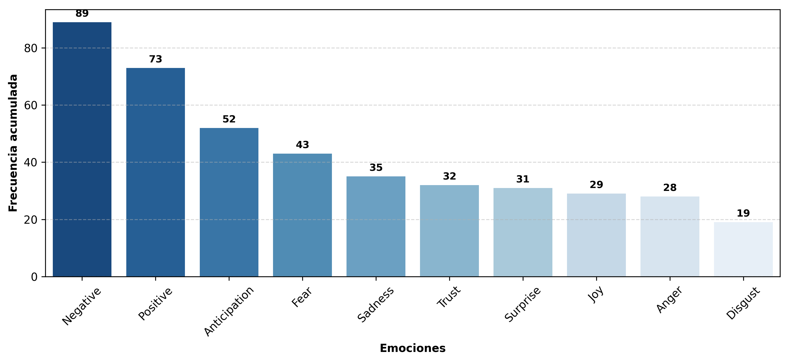
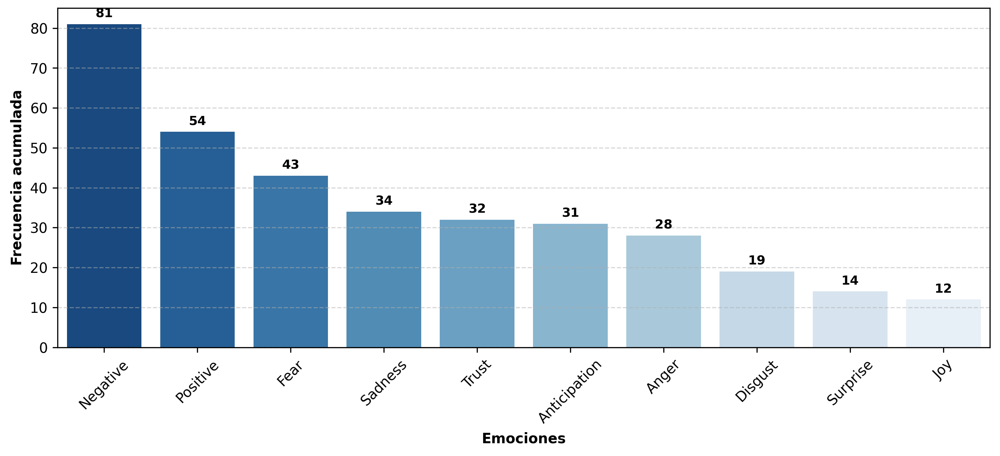
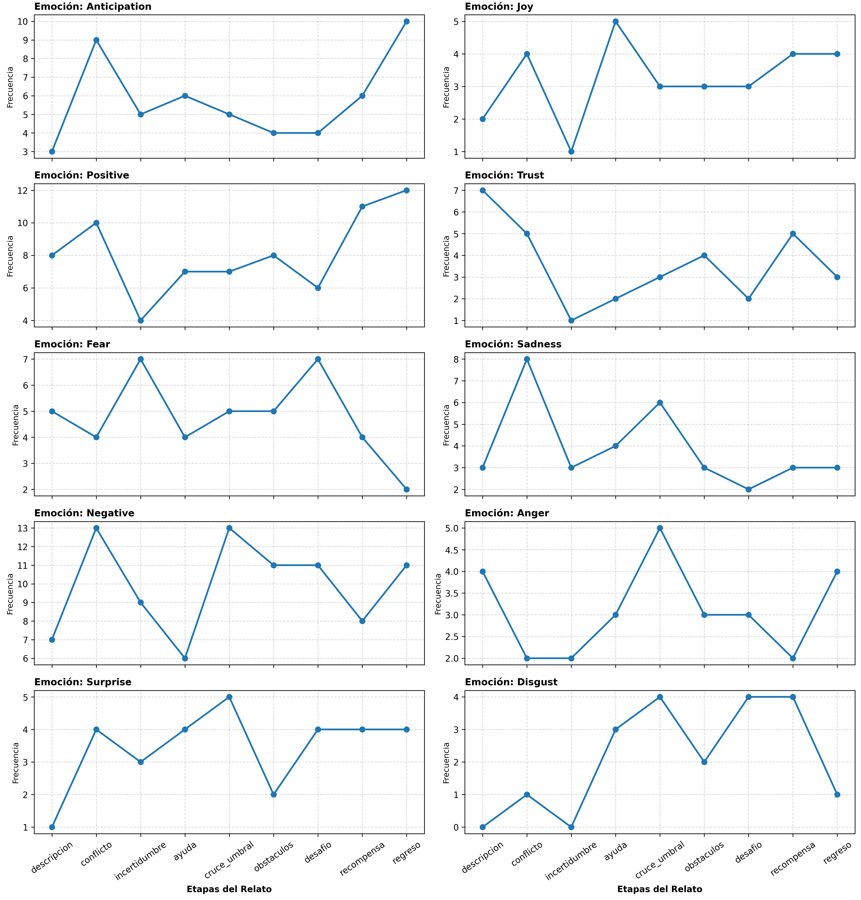
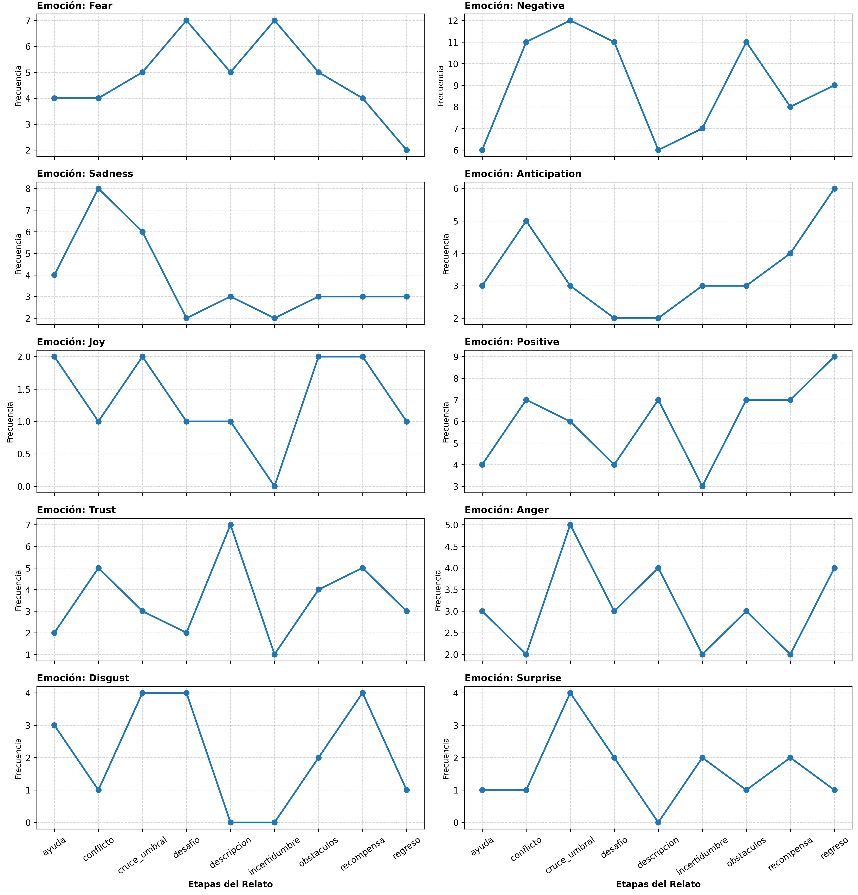
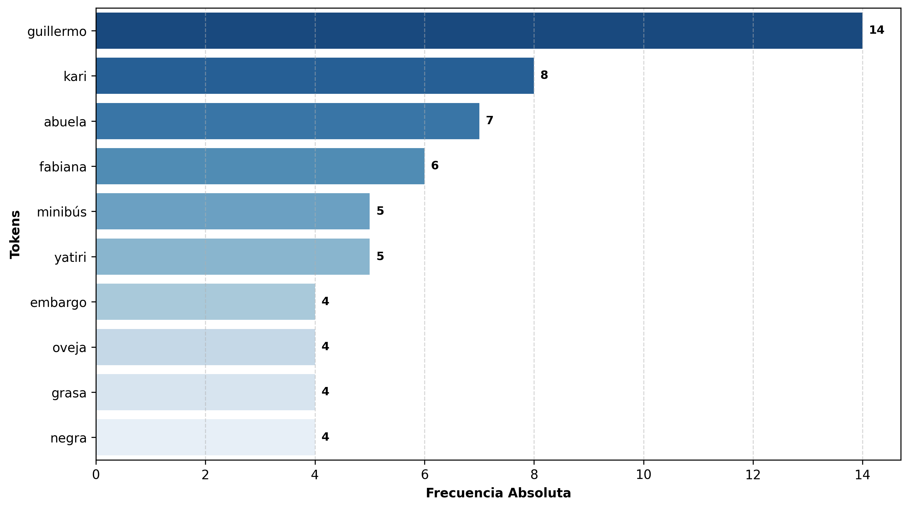

En cuanto a la distribución global de emociones, las polaridades negativa y positiva ocupan el primer y segundo lugar respectivamente, seguidas por anticipación, miedo y tristeza, este comportamiento se encuentra fuertemente influenciado por las etapas de conflicto, incertidumbre, cruce del umbral y obstáculos, donde el protagonista enfrenta el temor de perder a su pareja, la incertidumbre ante los diagnósticos médicos y la duda sobre la veracidad de la leyenda. Por otro lado, las emociones positivas como anticipación y alegría se mantienen dentro del grupo principal, influenciadas por las etapas de regreso, recompensa y ayuda, en las que el protagonista recibe apoyo, guía y finalmente logra salvar a su novia

Mantiene un comportamiento equivalente a la distribución por texto, con ligeros cambios, donde la tristeza y la confianza forman parte del podio principal, esto se fue incluenciado por la distribución a nivel de tokens, no obstante, mantiene un comportamiento equivalente.

Al observar la evolución de las emociones por etapas, se identifican picos significativos en las emociones negativas: disgusto, miedo, tristeza y enojo, acompañadas de una marcada polaridad negativa, estas emociones dominan especialmente en los momentos de mayor tensión narrativa. No obstante, también se registran picos relevantes en emociones como sorpresa y alegría, vinculados principalmente a la etapa del cruce del umbral, cuando el protagonista decide adquirir los elementos necesarios para salvar a su novia, de manera paralela, la polaridad positiva muestra una evolución ascendente desde la etapa de incertidumbre, reflejando la esperanza y la determinación del protagonista.

Mantiene una evolución bastante similar a la evolución por texto, con algunas variaciones en la intensidad y distribución de las emociones a lo largo de las etapas del relato.

El comportamiento observado en el análisis por tokens resulta equivalente al obtenido en el análisis por texto, lo que confirma la coherencia de la estructura emocional del relato. Sin embargo, al examinar el ranking de tokens más frecuentes, se evidencia que los primeros seis (6) lugares corresponden a los nombres propios de los personajes principales: el protagonista y la leyenda ocupan las posiciones más destacadas, seguidos por la abuela, la novia y, finalmente, elementos contextuales como el medio de transporte y el yatiri que brinda ayuda.
Al extender el límite de visualización hacia tokens con mayor relevancia emocional, se identifican varias palabras con frecuencias similares que aportan matices significativos, por ejemplo: